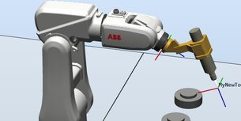

| LOGO |
LOGO |
LOGO |
TIA-PORTAL |
ELECTRÍCIDAD
AUTOMATISMOS |
ROBOT |
DEMO LOGOSoft
|
siemenslogo.com
|
Referencias entre bloque logo8
|
CURSO
TIA-PORTAL SIEMENS S7-200
|
|
 |
|
LOGO DATALOGGING
|
Modificar parametros
PDF - LOGO |
OTRO CURSO
DE TIA-PORTAL
|
AUTOMATIZACIÓN INDUSTRIAL |
|
|
Curso de programación del LOGO 8
|
|
VIDEO LOGO
I y Q ANALÓGICAS.
CASTILLO |
Manuales 1200
|
PEDIDOS DE ELECTRÓNICA
|
TUTORIALES
ROBOTSTUDIO
MECATRONESFP |
|
CURSO
DE PROGRAMACIÓN LOGO ATS.INGENIERIA
|
SPS-VISU 1 (youtube)
|
Salida Analógica
Manual siemens
|
|
PRESENTACIONES
VARIAS DE AUTOMATIZACIÓN
|
SCRIBD
MANUAL IRB120 |
|
WEBSERVER inicial
WEBSERVER COMPLETO
|
REGULADOR PI (youtube)1
REGULADOR PI
|
DIBUJOS
3D MATERIAL AUTOMATÍSMOS |
PRINCIPIOS
DE ELÉCTRICIDAD Y ELECTROMAGNETISMO |
SCRIBD
CURSO ROBOTSTUDIO
LEÓN |
CURSO LOGO 8
|
E-EDUCACIÓN
SIEMENS |
|
|
EJERCICIOS ELECTRONEUMATICA
|
|